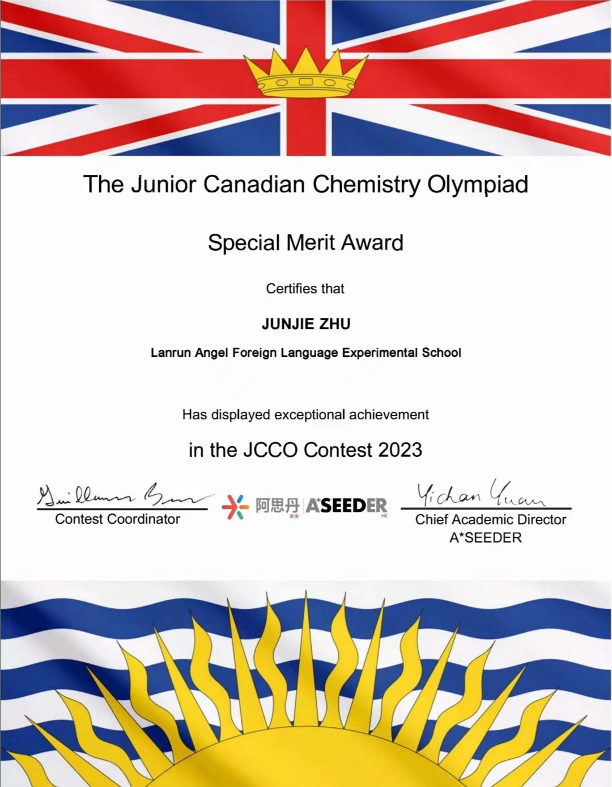

关于我
大家好，我是朱俊杰，一个热爱技术、热衷于探索未知领域的开发者。在这里，我将分享我的学习历程、项目经验和生活点滴。
我的项目
- 个人高中成绩和过往成就
- 参加校外公益活动以及高中社团活动
DSE高一选修和主修科目成绩： 2023年加拿大化学初级竞赛（JCCO）全国银奖、全球优秀奖 校长提名奖
曾经帮助和陪伴孤独症儿童，这次活动，通过与孤独症儿童一起玩橡皮泥这样简单而有趣的方式，为这群特殊的孩子带去更多关爱和温暖。当我们在和孤独症儿童一起玩的时候，帮助他们在心理上的压力有所释放，使我感到我是值得的，令我很有成就感。
作品展示


联系方式
邮箱：zjj12_02@qq.com
GitHub：朱俊杰的GitHub